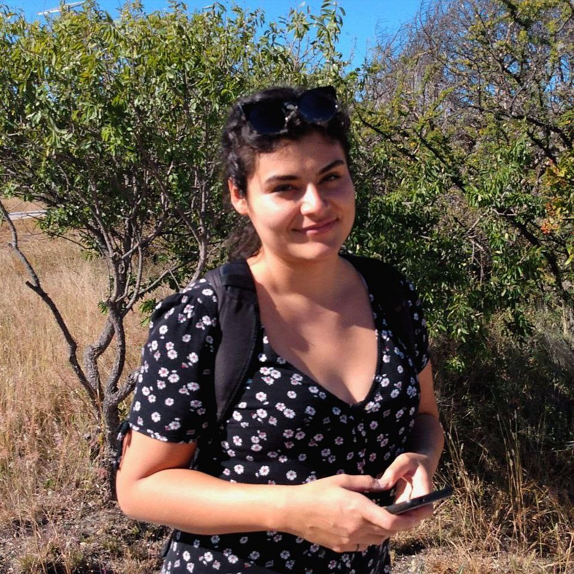

Cognitive & Systems Neuroscience
I am a researcher in cognitive and systems neuroscience studying how neural populations dynamically represent and transform information to support internally guided behavior in non-human primates.
I study how neural activity gives rise to internal representations that support prediction and behavior. My work combines behavioral experiments in macaques, electrophysiology, population-level analyses, and computational modeling. I am particularly interested in how distributed cortical dynamics shape internal representations, and behavioral readout.
Non-human primate behavioral experiments • Multi-electrode electrophysiology • Neural population analysis • Dimensionality reduction • Neural decoding • State-space modeling • Eye tracking • Computational modeling
My doctoral research investigated how the primate hippocampus represents dynamic events that unfold over time. Using a visual metronome task, I studied how hippocampal activity tracked rhythmic structure when sensory information was available and when that structure had to be maintained internally.
I recorded single-neuron activity and local field potentials from the hippocampus of behaving rhesus macaques performing a temporal prediction task. This work examined how neural activity reflected tempo, elapsed time, spatial alternation, and the transition from sensory-guided to internally generated representations.
I analyzed hippocampal population activity to characterize the dynamics that supported internal tracking of rhythmic events. I used generalized linear models, time-frequency analysis, PCA, and demixed PCA to study tempo-scaled oscillations, mixed selectivity, and low-dimensional population structure associated with behavioral performance.
My full academic CV is available below.
View CV
Email:
Google Scholar:
Google Scholar
ORCID:
ORCID
GitHub:
GitHub